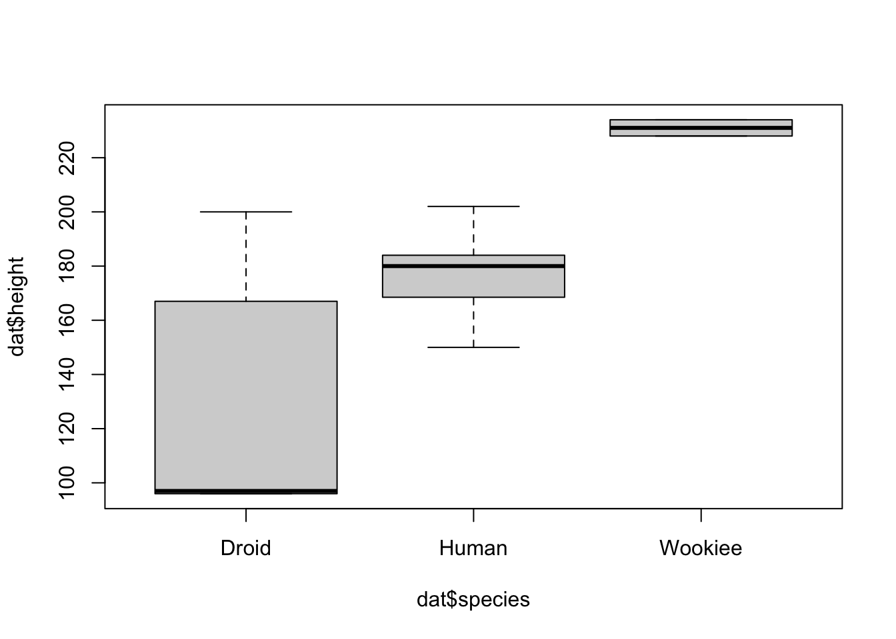

The Quarto (silly) example
header one
header two
header three
This is italic this is bold, and this is both!.
An unordered list:
- Helmut
- Gerhard
- Angela
An ordered list:
- Bush
- Obama
- Trump
Combined:
- Sour
- Lime
- Envy
- Sweet
- Honey
- Love
Example
Now follow some examples. We start with some analyses on Star Wars characters.
The package dplyr has a database included.
Starwars
The Starwars data-set contains the following variables: name, height, mass, hair_color, skin_color, eye_color, birth_year, sex, gender, homeworld, species, films, vehicles, starships.
Question 1: Do different species have different heights?
Yes, as we can see from Figure 1, not all species have the same height distribution.
Question 2: Is there a gender bias in Star Wars?
tab <- table(starwars$gender)
kable(tab)| Var1 | Freq |
|---|---|
| feminine | 17 |
| masculine | 66 |
Take a look at Table 1. There is a clear bias towards male characters.
Question 3: From which homeworlds do the characters come from?
Table 2 shows which species are located at which homeworld.
Code
filter <- names(which(table(starwars$species) > 2))
dat <- starwars[starwars$species %in% filter,]
tab <- table(dat$homeworld, dat$species)
tab <- rbind(tab, total = margin.table(tab, 2))
tab <- cbind(tab, total = margin.table(tab, 1))
kable(tab)| Droid | Gungan | Human | total | |
|---|---|---|---|---|
| Alderaan | 0 | 0 | 3 | 3 |
| Bespin | 0 | 0 | 1 | 1 |
| Bestine IV | 0 | 0 | 1 | 1 |
| Chandrila | 0 | 0 | 1 | 1 |
| Concord Dawn | 0 | 0 | 1 | 1 |
| Corellia | 0 | 0 | 2 | 2 |
| Coruscant | 0 | 0 | 2 | 2 |
| Eriadu | 0 | 0 | 1 | 1 |
| Haruun Kal | 0 | 0 | 1 | 1 |
| Kamino | 0 | 0 | 1 | 1 |
| Naboo | 1 | 3 | 5 | 9 |
| Serenno | 0 | 0 | 1 | 1 |
| Socorro | 0 | 0 | 1 | 1 |
| Stewjon | 0 | 0 | 1 | 1 |
| Tatooine | 2 | 0 | 8 | 10 |
| total | 3 | 3 | 30 | 36 |